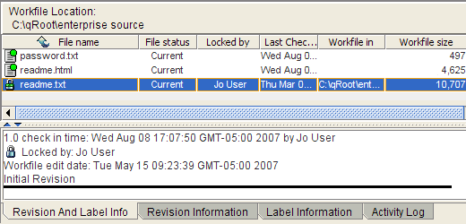

|
QVCS Enterprise Tutorial: Client Application BasicsChecking Out a Revision from the ArchiveIn this step, you'll check out a revision from one of the QVCS archive files you've created. A check-out operation is roughly equivalent to a get, which retrieves the latest revision from the archive into the associated work file, followed by a lock, which enables you sole access to a revision. Checking out a file will retrieve a revision, restrict access to it, and also change the file's read-write attribute so that you can edit it. To perform a quick check-out, you can simply click the Check Out File Since each of your files only has one revision, go ahead and check one of them out using the Check Out File  Now that you've checked out a revision from the archive, you'll be able to make changes to the work file. Note that toggling the read-write attribute with check-outs and check-ins is a behavior defined by the "Protect Workfile" attribute within QVCS. This is an attribute which can be turned on or off for each file. Typically it's helpful to leave it on, as a write-protected file status serves as a reminder that you've yet to check out the file you want to work on. Using Keywords within a Text FileWhile you have a file checked out, let's take the opportunity to explore the utility of keywords. Keywords only work well in some binary files, so be sure you're working with a text file. A keyword is a string that you can embed in a controlled file to keep track of version control information within the file itself. Enterprise can recognize these strings and translate them into meaningful information when you perform certain QVCS operations. In order to use keywords in a file, you'll first have to enable the associated QVCS attribute. To do this, right click on the file you checked out and select Set Attributes... from the context menu. This will bring up the following dialog: Each QVCS archive file is initialized with a default set of attributes that dictate how Enterprise should treat the file when performing certain actions. For now, just enable the "Expand Keywords" checkbox and click OK. Enterprise will now expand any keywords present in the work file whenever you check it out, and contract them when it stores a revision. Next, open the file in your preferred editor. Enterprise supports over ten different keywords, but let's just choose a few to test with. At the beginning of your text file, insert the following four lines:
Because you've turned on keyword expansion, when next you check in a revision, Enterprise will automatically edit the work file to expand these into meaningful information-- specifically, a copyright message, the edit date of the latest revision, the name of the project it belongs to, and the revision information for the past three revisions. |
 toolbar button. Doing so will automatically check out the most recent revision in a file's archive, without bringing up a dialog. If you want to check out any other revision, you can select Check Out... either from the File menu or the context menu that appears when you right click on a file.
toolbar button. Doing so will automatically check out the most recent revision in a file's archive, without bringing up a dialog. If you want to check out any other revision, you can select Check Out... either from the File menu or the context menu that appears when you right click on a file.| For the source code, see https://github.com/jimv39/qvcsos |